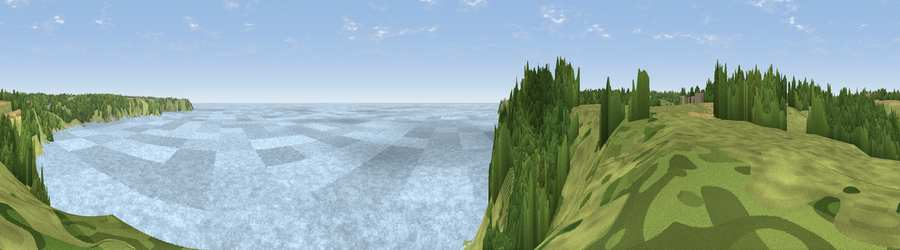

Viewpoint near Cadgwith
#10149 in England · top 17% of its area beats it · near CadgwithThe view, rendered

A 360° render of this exact spot computed from the terrain model, tree cover and land cover — summer colours, afternoon light, calibrated against photographs of famous viewpoints. Real trees, hedges and buildings will differ in detail.
The panorama
Grey silhouette: terrain skyline in each direction (720 bearings, Earth curvature and refraction included). Dashed green: skyline with trees (+15 m) and buildings (+8 m) as obstacles. Blue strip: how far the ground is visible on each bearing.
Where the view opens
Wedge length = distance to the farthest visible ground on that bearing (vegetation-aware). Rings at 10, 25 and 50 km.
What fills the view
75% water · 12% woodland · 11% grassland · 1% cropland
Angular shares of the visible panorama (visual magnitude), not map area. Landscape diversity 0.34 (0–1 Shannon).
Key numbers
More beautiful places nearby
The staircase of upgrades: each row has a higher view potential than everything closer. Driving times are estimates from straight-line distance, calibrated against real road routing — check an actual route before setting out.
| Place | Direction | Drive | Score |
|---|---|---|---|
| Viewpoint near Cadgwith | SSW · 0 km | ~1 min | 64.6 |
| Viewpoint near Lizard | WSW · 5 km | ~12 min | 65.2 |
| Viewpoint near Mullion | W · 6 km | ~14 min | 72.0 |
| Viewpoint near Mullion | W · 7 km | ~14 min | 72.7 |
| Viewpoint near Porthoustock | NE · 10 km | ~20 min | 74.0 |
| Viewpoint near Ashton | NW · 19 km | ~32 min | 81.3 |
| Tregonning Hill | NW · 20 km | ~34 min | 83.0 |
| Rosewall Hill | NW · 34 km | ~52 min | 88.0 |
49.99198, -5.17226 · source: screening · position refined by local search. Computed location — check access rights before visiting.